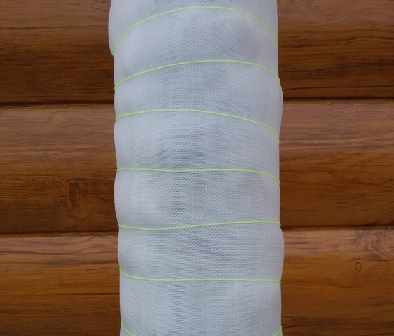
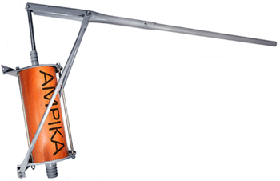

БУРЕНИЕ И РЕМОНТ СКВАЖИН НА ВОДУ
Буровая компания "Орбита Люкс"
производит бурение и ремонт скважин мобильным оборудованием и
вручную. Мы стараемся внедрять передовые технологии и материалы для снижения стоимости
работ и повышения срока службы скважин.
Скважины на песке мы в основном выполняем из полиэтиленовой трубы диаметром
125 мм 160 мм и 63 мм в основном эти скважины работают стабильно и редко выходят из строя.
Дебит этих
скважин в основном составляет от 1,5 до 10 тысяч литров воды в час в некоторых случаях и
больше.
Дебит скважины зависит от водоносного слоя, глубины залегания грунтовых вод и т. д.
Скважина на песок состоит из обсадной трубы, на конце которой находится фильтр.
Фильтры мы используем пластиковой сетки. Фильтр предотвращает
попадание песка в выкачиваемую из скважины воду.
Скважина для воды на песке
|
|
Скважина для воды на глине
|
Синтетический фильтр предпочтительнее т.к. он не забивается, если вода имеет примесь металла, известно, что значительное количество скважин выходит из строя как раз из-за забившегося металлического (латунного или нержавеющего) фильтра. По нашему мнению, не глубокие скважины из стальных труб с металлическими фильтрами уходят в прошлое.

Пластиковая труба с синтетическим фильтром
|
|
Стальная труба с нерживеющим фильтром
|
Мы рекомендуем не глубокие скважины на песок изготавливать из пластиковой трубы, и предпочитаем метод гидробурения (промывкой водой) т.к. появляется возможность выбрать лучший слой песка для установки фильтра. Ведь качество воды из скважины зависит от слоя в котором установлен фильтр. Выбор слоя для установки фильтра мы производим путем отбора образцов грунта. Если производить бурение скважины на песок шнековым способом (без использования воды), то возможности выбора слоя особенно в трудных условиях практически исключается и есть вероятность получить содержание железа, хотя этого можно было и избежать. Бурение скважины на песке нами производится в таких районах как Батайск, Кулешовка, Самарское, Пешкова, Павловка, Ольгинская, Колузаево, Овощной и т.д.
Скважины на глине обсаживаем в основном полиэтиленовой трубой диаметром 160 мм она не подвергается коррозии не гниет, имеет достаточную прочность и долговечность. Выход из строя скважин пробуренных на глине в основном происходит от их заиливания. Ремонт таких скважин заключается в их прочистке. Скважины на глине бурятся в таких районах как Ростов-на-Дону, Ленинаван, Мокрый Батай, Большие Салы и т.д.
Бурение скважин мобильным оборудованием производится не только на открытых площадках, а так же в стесненных условиях подвалах погребах, смотровых ямах и в помещениях, например, на веранде, в котельной, в кухне, в коридоре, под лестницей, для выполнения работы достаточно нескольких квадратных метров. Бурение скважины на воду мобильным оборудованием с обратной промывкой водой возможно на глубину до 40 метров. На выполнение работ в основном уходит от нескольких часов до одного дня.
Электрический станок гидробурения |
|
Электрический станок гидробурения |
Ручное бурение скважин на воду мы производим с обратной промывкой водой, глубина бурения зависит от свойств грунта.
Для изготовления скважин мы используем обсадные трубы из полиэтилена диаметром 50 мм, 63 мм, 75 мм, 90 мм, 110 мм, 125 мм, 140 мм, 160 мм возможна установка обсадных труб другого диаметра и из других материалов.
Труба обсадная полиэтиленовая с резьбой диаметром 160 мм |
Труба полиэтиленовая диаметром 63 мм
|
Выбор места расположения скважины является одним из важных моментов при бурении и дальнейшей эксплуатации скважины. И принять решение где расположить скважину, учитывая при этом многие факторы могут только специалисты. Наши специалисты выезжают на место для предварительного просмотра, чтобы подобрать оптимальное место расположения скважины.
Качать воду из скважины возможно
электрическим насосом, бензиновой помпой или ручным насосом в народе его называют качалкой, а так же для подъема воды из скважины можно использовать цилиндрическое
ведро с клапаном в дне. Клапан открывается при опускании ведра в скважину и вода набирается в ведро через клапан, при подъеме ведра клапан закрывается и ведро извлекается из скважины.
Электрическая насосная станцияAkvario |
Бензиновая помпа |
 Механический ручной насос |
Качать воду из скважины для водоснабжения дома и полива приусадебного участка можно насосной станцией. Насосная станция способна поддерживать давление в системе водоснабжения работая в автоматическом режиме, с периодическим включением по мере падения давления воды от ее расхода. В случае необходимости автоматику можно подключить на погружной насос.
Насос поверхностный Akvario |
Насосная станция Grundfos |
Погружной насос Grundfos |
Установка насосов, насосных станций, монтаж автоматики, водоснабжение и обустройство скважин.
Подключение к основному водопроводу обходится очень дорого и хлопотно, да и стоимость воды постоянно увеличивается, давления часто не хватает, воду отключают в самые неподходящие моменты. А при автономном водоснабжении этих проблем не возникает.
Если вы уже подключены к центральному водопроводу но хотите стабильного водоснабжения, то мы и ВАМ постараемся помочь в этой ситуации. Дабы при наступлении перебоя с водоснабжением, ВЫ могли бы переключиться на скважину, всего лишь повернув кран.
НА СКВАЖИНЫ ПРЕДОСТАВЛЯЕТСЯ ГАРАНТИЯ
Бурение скважин на воду мы выполняем в
- городах: Батайск, Ростов-на-Дону, Азов, Аксай и др.
- населенных пунктах: Алитуб, Арпачин, Беловодье, Береговой, Большой Лог,
Васильево-Петровский,
Васильево-Шамшева, Верхнеподпольный, Веселая победа, Водопадный, Высочино,
Головатовка, Городище, Дорожный, Дугино, Елизаветинская, Ельбузд, Еремеевка, Задонский,
Займо-Обрыв, Зеленый, Знаменка, Иваново-Шамшево, Истомино, Кагальник, Кагальницкая,
Казачий Ерик, Каяла, Каяльский, Кировская, Ковалевка, Койсуг,
Колузаево, Кочеванчик, Красный Крым, Красный Сад, Крым, Кугей, Кулешовка,
Курган, Ленина,
Ленинаван, Ленинакан, Логутник, Лугань, Мержаново, Мило-Яковлевка, Мокрый Батай,
Мокрый чалтырь, Морской Чулек, Нижнеподпольный, Новоалександровка, Ново-Батайск,
Новомирский,
Новониколаевка, Новотроицкое, Обуховка, Овощной, Октябрьский, Ольгинская, Островского,
Павловка, Павло-Очаково, Петровка, Пешкова, Платоно-Петровка, Полушкино, Пятихатки,
Рассвет, Рогожкино, Самарское, Свой Труд, Семибалки, Старочеркасская,
Стефанидинодар, Султан-Салы, Тимирязево, Топольки, Узяк, Усть-Койсуг, Хапры, Хомутовская,
Черюмкин, Шмат, Янтарный и др.
У нас БЕСПЛАТНЫЙ выезд специалиста.
|